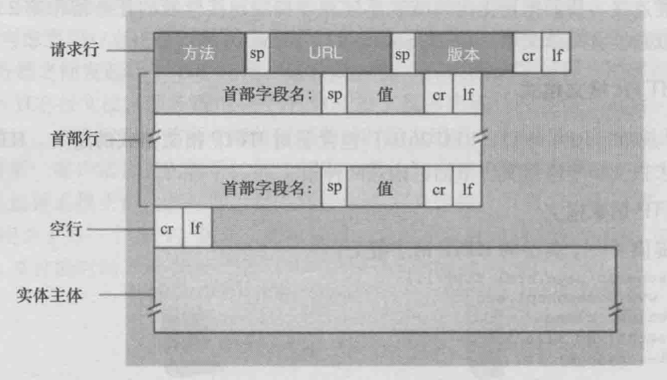

HTTP 报文格式
对于 TCP 而言，在传输的时候分为两个部分：TCP 头和数据部分。
而 HTTP 报文是面向文本的，报文中的每个字段都是一些 ASCII 码串，各个字段的长度是不确定的。HTTP 有两类报文：请求报文 和 响应报文。
HTTP 请求/响应报文由以下内容组成：
- 请求头
- HTTP 头部字段
- 空行
- 可选的 HTTP 报文主体数据
请求报文
HTTP 的请求报文分为三个部分：
- 请求行
- 请求方法
- 请求地址 URL
- HTTP 协议版本
- 首部行
- Content-Type
- 空行
- 实体主体
请求行
请求行是请求消息的第一行，由三部分组成：
- 请求方法（GET / POST / DELETE / PUT / HEAD）
- 请求资源的 URI 路径
- HTTP 的版本号
🌰 示例：
GET /index.html HTTP/1.1
请求方法
HTTP/1.1 协议中共定义了八种方法，以不同的方式操作指定的资源。
| 方法名 | 功能 |
|---|---|
| GET | 向指定的资源发出 显示 请求，使用 GET 方法应该只用在 读取数据 上，而不应该用于产生 副作用 的操作中。 |
| POST | 指定资源 提交数据，请求服务器进行处理（例如提交表单或者上传文件）。数据被包含在请求文本中。这个请求可能会创建新的资源或者修改现有资源，或两者皆有。 |
| PUT | 向指定资源位置上传其 最新内容。 |
| DELETE | 请求服务器删除 Request-URI 所标识的资源。 |
| OPTIONS | 使服务器传回该 资源支持的所有 HTTP 请求方法。用 * 来代替资源名称，向 Web 服务器发送 OPTIONS 请求，可以测试服务器功能是否正常运作。 |
| HEAD | 与 GET 方法一样，都是向服务器发出指定资源的请求，只不过服务器将 不传回资源的本文部分，它的好处在于，使用这个方法可以在不必传输全部内容的情况下，就可以获取其中 关于该资源的信息（原信息或称元数据）。 |
| TRACE | 显示服务器收到的请求，主要用于测试或诊断。 |
| CONNECT | HTTP/1.1 中预留给能够将连接改为通道方式的代理服务器。通常用于 SSL 加密服务器的链接（经由非加密的 HTTP 代理服务器）。 |
其中，最常见的是 GET 和 POST 方法，如果是 RESful API 接口规范的话一般会用到 POST、DELETE、GET、PUT（分别对应增删查改），这里附上一篇有关 RESTful API 的文章 什么是 RESTful API 。
GET 与 POST
HTTP 协议从未规定 GET/POST 的请求长度限制是多少。对 GET 请求参数的限制是来源与浏览器或 Web 服务器，浏览器或 Web 服务器限制了 URL 的长度。
为了明确这个概念，我们必须再次强调下面几点：
- HTTP 协议 未规定 GET 和 POST 的长度限制
- GET 的最大长度显示是因为 浏览器和 Web 服务器限制了 URI 的长度
- 不同的浏览器和 Web 服务器，限制的最大长度不一样
- 要支持 IE，则最大长度为 2083byte，若只支持 Chrome，则最大长度 8182byte
性质
- GET 请求类似于查找的过程，用户获取数据，可以不用每次都与数据库连接，所以可以使用缓存
- POST 不同，POST 做的一般是修改和删除的工作，所以必须与数据库交互，所以不能使用缓存。因此 GET 请求适合于请求缓存
两种请求方法的对比
- 从 缓存 的角度，GET 请求会被浏览器主动缓存下来，留下历史记录，而 POST 默认不会。
- 从 编码 的角度，GET 只能进行 URL 编码，只能接收 ASCII 字符，中文需要 URL 编码，而 POST 没有限制。
- 从 参数 的角度，GET 一般放在 URL 中明文传输，因此不安全，而 POST 放在请求体中密文传输，更适合传输敏感信息。
- 从 幂等性 的角度，GET 是幂等的，而 POST 不是。（幂等表示执行相同的操作，结果也是相同的）
- 从 TCP 的角度，GET 请求会把请求报文一次性发出去，而 POST 会分为两个 TCP 数据包，首先发
header部分，如果服务器响应 100（continue）， 然后发body部分。（火狐浏览器除外，它的 POST 请求只发一个 TCP 包）
GET 传输数据量限制在 2KB（GET 是通过 URL 提交数据，而 URL 本身对于数据没有限制，但是不同的浏览器对于 URL 是有限制的，比如 IE 浏览器对于 URL 的限制为 2KB，而 Chrome，FireFox 浏览器理论上对于 URL 是没有限制的，它真正的限制取决于操作系统本身），而 POST 对于数据大小是无限制的（真正影响到数据大小的是服务器处理程序的能力）。
请求头
请求头中的信息有和缓存相关的头（Cache-Control，If-Modified-Since）、客户端身份信息（User-Agent）等等。
请求头的格式为：键: 值，注意 冒号后面有一个空格。
🌰 示例：
Accept: */*
Accept-Encoding: gzip, deflate, br
Accept-Language: zh-CN,zh;q=0.9,en;q=0.8
Connection: keep-alive
Content-Length: 21429
Content-Type: application/json
Host: api.github.com
Origin: https://github.com
Referer: https://github.com/
User-Agent: Mozilla/5.0 (Macintosh; Intel Mac OS X 10_13_5) AppleWebKit/537.36 (KHTML, like Gecko) Chrome/67.0.3396.99 Safari/537.36
常见的请求 Header
| 请求头 | 说明 |
|---|---|
| Accept | 表示浏览器接受的数据类型 |
| Accept-Encoding | 表示浏览器接受的数据压缩格式 |
| Host | 表示当前请求访问的目标地址 |
| Authorization | 表示用户身份认证信息 |
| User-Agent | 表示浏览器类型 |
| If-Modified-Since | 表示当前请求资源最近一次更新时间 |
| If-None-Match | 表示当前请求资源最近一次标识的 ETag 值 |
| Cookie | 表示浏览器保存的 Cookie 信息 |
| Referer | 表示标识请求引用自哪个地址 |
请求体
请求体是 POST 请求方式中的请求参数，以 key = value 形式进行存储，多个请求参数之间用 & 连接，如果请求当中请求体，那么在请求头当中的 Content-Length 属性记录的就是该请求体的长度。
POST hysj.jsp HTTP/1.1
Host: search.cnipr.com
User-Agent: Mozilla/5.0 (Windows;U;Windows NT 6.9;zh-CN;rv:1.9.1.13)Gecko/20100914 Firefox/3.5.13 (.NET CLR 3.5.30729)
Accept: text/html, application/xhtml+xml,application/xml;q=0.9,*/*;q=0.8
Accept-Language: zh-cn,zh;q=0.5
Accept-Encoding: gzip,deflate
Accept-Charst: GN2312,utf-8;q=0.7,*;q=0.7
Keep-Alive: 300
Connection: keep-alive
Referer: http://search.cnipr.com/cnipr/zljs/hyjs-biaodan-y.jsp
Content-Length: 405
pageNo=0&pageSize=10&orderNum=306735659327926273&customerMobile=15626000000&startTime=2019-02-01%2000:00:00&endTime=2019-02-25%2014:54:20&status=SUCCESS&source=WECHAT_SHOPPING&canteenId=104&refundStatus=REFUNDED&startPayTime=2019-02-01%2000:00:00&endPayTime=2019-02-25%2014:54:47
根据应用场景的不同，HTTP 请求的请求体有三种不同的形式：
- 任意请求体：移动开发者常见的，请求体是任意类型的，服务器不会解析请求体，请求体的处理需要自己解析，如 POST、JSON 的时候就是这类
- 查询字符串：URL 中 Query String 的格式要求，多个键值对之间用
&连接，键与值之间用=连接，且只能用 ASCII 字符，非 ASCII 字符需使用UrlEncode编码 - 文件上传：当需要实现 文件上传 时，请求体会被分成多个部分，每个字段 / 文件都被首部字段
Content-Type的 boundary 指令指定的值分成单独的段，每段以--加boundary指令的值开头，然后是该段的描述头，描述头之后空一行接内容，请求结束的标识为boundary后面加--
<br />

区分是否被当成文件的关键是 Content-Disposition 是否包含 filename，因为文件有不同的类型，所以还要使用 Content-Type 指示文件的类型，如果不知道是什么类型取值可以为 application/octet-stream 表示文件是一个二进制的文件，如果不是文件则 Content-Type 可以省略。
响应报文

HTTP 响应的格式上除状态行（第一行）与请求报文的请求行不一样之外，其他的就格式而言是一样的，但排除状态行和请求行的区别，从 Header 上还是可以区分出 HTTP 请求和 HTTP 响应的区别的，怎么区别就要看前面的 Header。
HTTP 的响应报文分为三个部分：
- 状态行
- HTTP 协议版本
- 状态码
- 短语
- 首部行
- 空行
- 实体体
状态行
状态码用以表示网页服务器超文本传输协议响应状态的三位数字码。详细的状态码表请参考此处
| 状态码 | 对应信息 |
|---|---|
| 1XX | 提示信息，表示请求已接收，继续处理 |
| 2XX | 用于表示请求已被成功接收、理解、接收 |
| 3XX | 用于表示资源（网页等）被永久转移到其它 URL，也就是所谓的重定向 |
| 4XX | 客户端错误—请求有语法错误或者请求无法实现 |
| 5XX | 服务器端错误—服务器未能实现合法的请求 |
响应头
响应头同样可用于传递一些附加信息。
HTTP/1.0 200 ok
content-type: application/javascript;charset=utf-8
date: Tue, 07 Mar 2017 03:06:14 GMT
sever: Domain Reliability Searver
content-length: 0
x-xss-protection: 1, mode=bloack
x-frame-options: SAMEORIGIN
alt-svc: quic=":443";ma=2592000;v="36,35,34"
常见的响应头 Header
| 名称 | 作用 |
|---|---|
| Date | 表示当前相应资源发送的服务器日期和时间 |
| Last-Modified | 表示当前响应资源最后被修改的服务器时间 |
| Transfer-Encoding | 表示当前响应资源传输实体的编码格式 |
| Set-Cookie | 表示设置 Cookie 信息 |
| Location | 在重定向中或者创建新资源时使用 |
| Server | 表示服务器名称 |
响应体
响应体也就是网页的正文内容，一般在响应头中会用 Content-Length 来明确响应体的长度，便于浏览器接收，对于大数据量的正文信息，也会使用 chunked 的编码方式。